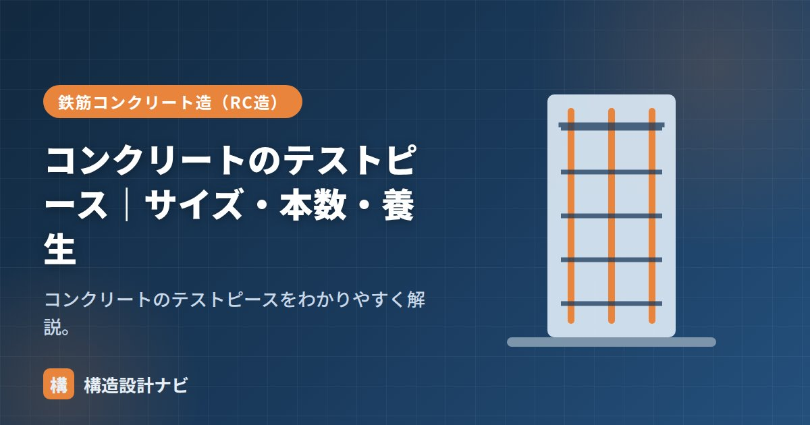

コンクリートのテストピース｜サイズ・本数・養生

テストピースとは、コンクリートの圧縮強度試験に使う円柱形の供試体のことです。生コンを現場で採取し、規定の型枠（モールド）に詰めて作製し、一定期間養生した後に圧縮試験機で強度を測定して、コンクリートが設計・調合で定めた強度を満たしているかを確認します。テストピースの採り方や本数、養生方法を誤ると、正しい強度判定ができず、後になって強度不足の疑いが生じても検証しづらくなるため、決められたルールに沿った採取・管理が欠かせません。
- テストピースは円柱形の供試体で、φ100×200mmが最も一般的なサイズ
- 1回の試験は通常3本で行い、その平均値で強度を判定する
- 目的に応じて標準養生・現場水中養生・現場封かん養生を使い分ける
サイズ
圧縮強度試験用のテストピースは円柱形で、直径と高さが1：2です。代表的なサイズは次のとおりです。
| 直径×高さ | 備考 |
|---|---|
| φ100×200mm | 最も一般的（粗骨材最大25mmまで） |
| φ125×250mm | — |
| φ150×300mm | 粗骨材が大きい場合 |
直径は使用する粗骨材の最大寸法の3倍以上を確保する必要があるとされ、粗骨材が大きいコンクリートでは、より大きいサイズのテストピースを選びます。高さが直径の2倍あるのは、圧縮試験時に材料内部の応力状態を安定させ、正しい強度が測定できるようにするためです。
本数・頻度
1回の試験は通常3本で行い、その平均で判定します。採取の頻度は、打込み日・打込み工区ごと、かつ150m³に1回などを目安に、所定の回数を採取します。1本だけでは、たまたま気泡やジャンカが混じっていた場合に誤った判定をしてしまうリスクがあるため、複数本の平均を取ることで測定のばらつきを吸収する仕組みになっています。
養生方法
- 標準（水中）養生（20±2℃）：配合の強度判定用。
- 現場水中養生：型枠取り外し時期の判定用。
- 現場封かん養生：構造体コンクリート強度の推定用。
標準養生は、常に一定の温度・湿潤条件で管理するため、コンクリートそのものの配合強度（材料としてのポテンシャル）を確認するのに適しています。一方、現場封かん養生は実際の構造体に近い温度履歴で養生するため、実際に打設された構造体コンクリートがどの程度の強度に達しているかを、より実態に近い形で推定するのに使われます。目的が異なるため、両方の養生方法を併用することも多くあります。
テストピースはモールド（型枠）にコンクリートを詰めて作ります。作り方・養生はJISに従い、目的に応じて養生方法を選びます。
判定の考え方
圧縮強度試験は、材齢28日で行うのが一般的です。判定は1回の試験（3本の平均）が設計基準強度以上であること、かつ個々の値が大きく下回っていないことなど、複数の基準を満たすことで合否を判断します。1回の試験結果だけでなく、複数回の試験結果を合わせて評価することもあり、単純に「1本でも低ければ不合格」という単純な話ではない点に注意が必要です。
よくある間違い・注意点
テストピースの採取・作製方法（詰め方、突き固めの回数、脱型のタイミングなど）が不適切だと、コンクリート自体の品質が良くても低い強度で測定されてしまうことがあります。テストピースの品質は試験結果の信頼性に直結するため、JISに定められた手順を正確に守ることが重要です。
Q1. テストピースの強度が低い場合、構造体も強度不足なのですか。
必ずしもそうとは限りません。テストピースの作製・養生に問題があった可能性もあるため、現場封かん養生の供試体や、必要に応じてコア抜き試験など、他の方法とあわせて総合的に判断します。
Q2. テストピースは誰が採取しますか。
一般に、生コンの受入検査を行う試験担当者や施工者が、荷卸し地点でJISの手順に従って採取します。第三者機関による立会いが行われることもあります。
採取したテストピースが現場の隅に放置され、水槽に運ばれるまで時間が空く場面を見たことがあります。強度に疑義が出た際に困らないよう、採取直後の管理まで確認するようにしています。
「供試体」「供試体型枠（モールド）」「構造体コンクリート」をどうぞ。
採取から試験までの流れ（図解）
合否判定の基準
試験結果はどう評価されるのか、判定の仕組みを整理します。
| 判定項目 | 基準 | 意味 |
|---|---|---|
| 3回の試験の平均 | 呼び強度の100%以上 | 全体として所定の強度を満たしているか |
| 1回の試験値 | 呼び強度の85%以上 | 極端に低い値が出ていないか |
二重の基準になっているのは、平均だけでは危険な場合があるためです。たとえば3回の値が「120%・120%・60%」なら平均は100%を満たしますが、60%の部分は明らかに問題があります。1回ごとの下限を設けることで、こうした極端なばらつきを検出できる仕組みになっています。
判定基準を満たさなかった場合、ただちに打ち直しとなるわけではありません。まず構造体コンクリートからコアを採取して実際の強度を確認します。供試体の作製・養生に問題があった可能性もあるためです。コア強度が十分であれば構造上問題ないと判断されることもありますが、不足していれば構造安全性の再検討、補強、最悪の場合は撤去・再施工に至ります。
よくある質問
Q1. テストピースは何本採取すればよいですか？
1回の試験につき3本が基本です。採取の頻度は、打込み日ごと・打込み工区ごと、かつコンクリートの量150m³に1回程度が目安とされます。ただしこれは受入れ検査用で、これとは別に構造体コンクリートの強度確認用（現場水中養生・現場封かん養生）の供試体も必要になるため、実際の採取本数はさらに多くなります。
Q2. テストピースの脱型はいつ行いますか？
一般に、成形から16時間以上3日以内に行います。早すぎると供試体が変形し、遅すぎると型枠との付着で表面を傷めるおそれがあるためです。脱型後はただちに所定の養生に移し、乾燥させないよう注意します。脱型のタイミングや養生開始の遅れは、強度の測定値に直接影響します。
Q3. テストピースの上面はなぜ平らに仕上げるのですか？
圧縮試験で荷重が均等にかかるようにするためです。上面が傾いていたり凹凸があったりすると、一部に応力が集中して本来より低い荷重で破壊し、強度を過小評価してしまいます。そのため、試験前にキャッピング（硫黄や研磨による平滑化）を行い、上下面の平行度と平滑さを確保します。この処理を怠ると、正しい強度が測定できません。
まとめ
- テストピースは圧縮強度試験用の円柱供試体。φ100×200mmが一般的。
- 1回3本で判定。打込み日・工区ごと、150m³に1回などの頻度で採取。
- 標準・現場水中・封かん養生を目的別に使い分ける。
- 採取・作製方法の精度が試験結果の信頼性を左右するため注意が必要。